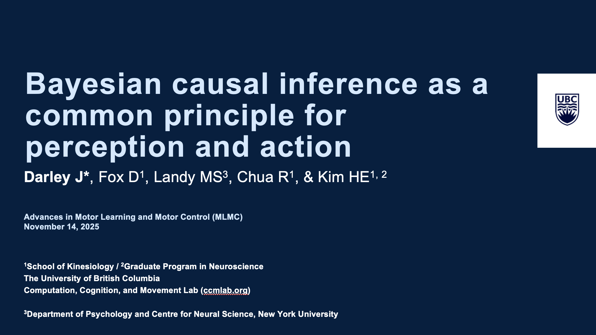

2025

MLMC 2025
Darley, J., Fox, D., Landy, MS., Chua, R., Kim, HE.
Bayesian causal inference as a common principle for perception and action
Presented at MLMC 2025, San Diego, California

SfN 2025
Darley, J., Fox, D., Landy, MS., Chua, R., Kim, HE.
Virtual Presentation at SfN 2025, San Diego, California